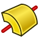

CAM ToolShape
Opis
Profile narzędziowe są podstawową częścią systemu narzędzi. Profile narzędzi są szablonami, na podstawie których tworzone są końcówki narzędzi (ToolBits). Reprezentują one konkretny fizyczny kształt narzędzia. Kształt (ToolShape) nie opisuje w pełni końcówki - do tego potrzebne są dodatkowe parametry, które zostaną dodane, gdy rzeczywista końcówka zostanie określona parametrami na podstawie szablonu.
Początkowo Profile narzędzi są po prostu dokumentami FreeCAD z jednym korpusem utworzonym w środowisku pracy  Projekt Części.
Projekt Części.
Tworzenie nowych profili narzędzi jest tematem zaawansowanym. Najczęściej potrzebne kształty już istnieją i są dostarczane wraz z instalacją programu FreeCAD:
-
W systemie Linux jest to zazwyczaj folder
/usr/lib64/FreeCAD/Mod/CAM/Tools/Shape. -
Na macOS jest to zazwyczaj folder
/Applications/FreeCAD.app/Contents/Resources/Mod/CAM/Tools/Shape. -
W systemie Windows jest to zazwyczaj folder
C:\Program Files\FreeCAD\Mod\CAM\Tools\Shape.
Są to:
::
ballend.fcstd
bullnose.fcstd
chamfer.fcstd
drill.fcstd
endmill.fcstd : endmill.fcstd
probe.fcstd
slittingsaw.fcstd
thread-mill.fcstd : thread-mill.fcstd
v-bit.fcstd
Można je znaleźć w podkatalogu /Mod/CAM/Tools/Shape/, w którym został zainstalowany program FreeCAD.
Użycie
-
Utwórz nowy dokument FreeCAD.
-
Otwórz środowisko pracy
 Część.
Część. -
Utwórz zawartość i nadaj jej nazwę, która będzie wyświetlana przy wyborze końcówki.
-
Utwórz szkic w płaszczyźnie XZ i narysuj połowę profilu końcówki narzędzia.
-
Umieść górę środka końcówki w punkcie położenia odniesienia
(0,0). Będzie to środek osi, na której kod G będzie obracał końcówkę. -
Uwaga: W tym momencie nie należy dodawać żadnych więzów wymiarowych.
-
-
Zamknij szkic.
-
Wyciągnij szkic przez

obrót wokół pionowej osi szkicu. -
Otwórz środowisko pracy
 CAM.
CAM. -
Wybierz szkic w oknie widoku drzewa. Dzięki temu Koszyk właściwości narzędzia skrawającego utworzony w następnym kroku będzie zagnieżdżony w Zawartości.
-
Wybierz z menu opcję .
-
Zostanie utworzony Koszyk właściwości narzędzia skrawającego o nazwie
Atrybuty. Ten obiekt będzie używany do kontrolowania wymiarów w szkicu. -
Kliknij dwukrotnie Koszyk właściwości narzędzia skrawającego w oknie widoku drzewa.
-
Zostanie otwarty panel zadań Koszyk właściwości.
-
Kliknij przycisk Dodaj ….
-
Zostanie otwarte okno dialogowe Utwórz właściwość.
-
Utwórz właściwość o nazwie
Diameter. Ta właściwość jest obowiązkowa dla końcówek narzędzi. W nazwach właściwości rozróżniana jest wielkość liter i nie mogą one zawierać spacji. -
Wybierz
Kształtz listy rozwijanej Grupa. -
Wybierz odpowiednie polecenie Typ.
-
Opcjonalnie określ Końcówkę narzędzia.
-
Kliknij przycisk OK.
-
W panelu zadań Koszyk właściwości wprowadź wartość dla właściwości Średnica.
-
W podobny sposób dodaj wszystkie pozostałe wymagane właściwości.
-
Po zakończeniu kliknij przycisk OK w panelu zadań Koszyk właściwości.
-
Kliknij dwukrotnie szkic w oknie Widoku drzewa.
-
Dodaj wiązania wymiarowe i zastosuj właściwości z utworzonego Koszyka właściwości. Na przykład, aby zastosować właściwość Średnica:
-
Kliknij dwukrotnie wymiar.
-
Kliknij ikonę
 .
. -
Wpisz wartość
[Attributes].Diameterw oknie Edytora formuł. -
Kliknij dwukrotnie przycisk OK.
-
-
Powtarzaj tę czynność, aż szkic zostanie w pełni związany.
-
Zapisz plik
FCStdw miejscu, w którym FreeCAD spodziewa się znaleźć pliki Końcówek narzędzi. Zobacz opis powyżej.-
Uwaga 1. Jeśli w systemie Windows odmówiono Ci dostępu do folderu, uruchom program FreeCAD w trybie ADMINISTRATOR.
-
Uwaga 2. Zawartość Zestawu narzędzi musi być pierwszym obiektem w oknie widoku drzewa. Te instrukcje zapewniają, że tak właśnie jest.
-
Miniaturki narzędzi
Końcówki narzędzi będą miały małą ikonę narzędzia w oknie widoku drzewa, jeśli obraz zostanie zapisany z aktywnymi miniaturami.
Ważne uwagi:
-
Przed zapisaniem dokumentu upewnij się, że w preferencjach programu FreeCAD zaznaczona jest opcja Zapisz miniaturę, a opcja Dodaj logo programu jest nieaktywna.
-
Upewnij się także, że przełączasz się na Widok z przodu i Dopasuj element do ekranu
-
Cokolwiek zobaczysz podczas zapisywania dokumentu, będzie to wizualna reprezentacja szablonu.